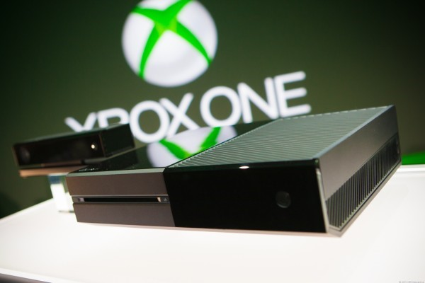

Berbeda dengan apa yang kita kenal soal konsep konsol selama belasan tahun terakhir ini, kemajuan teknologi yang begitu pesat di industri game membuat produsen tak punya banyak pilihan. Di tengah peningkatan performa yang signifikan untuk platform PC, konsol juga mulai terlihat kesulitan untuk menjalankan game-game rilis terbaru di kualitas yang paling optimal. Banyak hal yang harus dikorbankan, dari sekedar resolusi, visual, hingga framerate. Oleh karena itu, ada wacana jelas untuk merilis sebuah iterasi baru di tengah perpindahan generasi yang menawarkan peningkatan performa. Tak hanya Sony yang disebut-sebut sedang mempersiapkan Playstation 4.5, Microsoft juga melontarkan ketertarikan yang sama.
Walaupun keduanya masih belum buka mulut soal kapan tepatnya kita akan melihat varian konsol teranyar ini, ada spekulasi bahwa keduanya akan diperkenalkan setidaknya tahun ini juga. Setidaknya rumor ini menguat untuk sisi Microsoft setelah memerhatikan pendaftaran teknologi mereka di lembaga FCC Amerika Serikat yang bertanggung jawab atas teknologi transimisi data nirkabel.

Microsoft kabarnya baru menguji dua buah chip Wifi berbeda yang disinyalir akan memperkuat dua produk konsol Xbox One yang baru. Detailnya sendiri dipercaya akan meluncur di E3 2016 mendatang.
Ada dua chip Wi-fi yang baru saja selesai diuji untuk dua produk yang berbeda. Salah satunya mengacu khusus ke manual milik Xbox One, sementara yang satunya lagi adalah produk yang baru. Spekulasi merebak bahwa kedua produk ini adalah Xbox One versi slim dan sebuah versi Xbox One lebih kuat yang sempat didengungkan oleh Microsoft sebelumnya. Menariknya lagi? Microsoft memasang NDA untuk kedua produk keduanya. Detail lebih lanjut terkait keduanya baru akan dibuka pada tanggal 25 Juni 2016 mendatang, waktu yang sangat berdekatan dengan ajang E3 2016 yang akan diselenggarakan pada 14 – 16 Juni 2016.
Apakah ini berarti kita akan bertemu dengan varian konsol Xbox One lebih kuat tahun ini juga? Ataukah pendaftaran ini akan berakhir jadi sebuah produk berbeda dari yang kita prediksikan sebelumnya? Kita tunggu saja.
source : NeoGaf